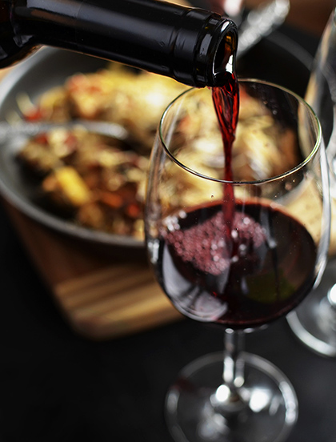

Concept.
料理で新しい体験を
こだわり選別した野菜と肉・魚の美味しさを味わえるお店。
フランスで培われた技術で生まれる本場の味をお楽しみください。
Wine.
食事とワインのマリアージュをお楽しみください。
- 
-
今月のワイン
注文具合により、お出しできるワインが異なることがございます。
赤ワイン
- DARIO PRINCIC・ROSSO -
– Domain・MOSSE –白ワイン
- DARIO PRINCIC・BIANCO -
- Clos du Tue Boeuf・La Gravotte -
Access.
-
-
住所 〒152-0042
東京都目黒区batu町146−24
TEL 080-1234-1234営業時間 開店 17:00 〜 閉店 21:00(L.O 20:30)
定休日 月・火
各種クレジットカード決済対応・PayPay対応アクセス 最寄り駅：祐天寺駅 徒歩5分程度
東口出て右手の住宅街に店舗がございます。
緑の看板が目印です。
専用の駐車場はございません。お車でお越しの際はお近くのパーキングをご利用ください。